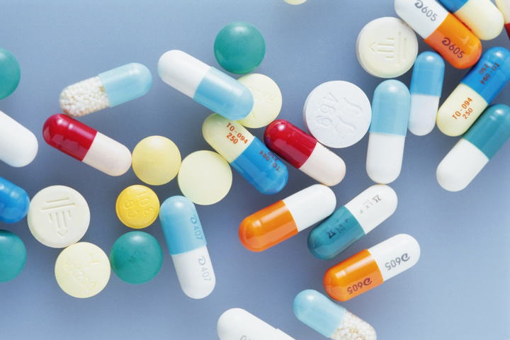

平成2年、「と畜場の汚水処理で最も負担となっている牛血液を有効利用できないか」というご相談をきっかけに、平成3年より牛血液を医薬品原料として活用するための研究・開発を開始し、平成4年に牛血液由来トロンビンの製造体制を確立しました。
平成13年のBSE対応（厚生労働省通知 医薬発第1069号）により製造停止を余儀なくされましたが、厚生労働省医薬食品局との協議を重ね、国立医薬品食品衛生研究所をはじめとする関係機関の審査により安全性と品質管理体制が認められ、製造を再開。この経験が現在のダードの品質管理体制の原点となっています。
| 由来 | 国産牛血液 |
|---|---|
| 対応規格 | 日本薬局方規格・自社規格に準拠 |
| 主な用途 | 医薬品製造用原料 |
| 供給・OEM | 製造方法、力価、ロット等の指定に対応 |
品質管理・トレーサビリティ
ダードでは、自社スタッフが原料の採取・製造・品質確認まで一貫して管理しています。国内産地を明確に開示し、各工程の検査記録を保管。出産から出荷まで生産履歴を追跡できるトレーサビリティ体制を構築しています。